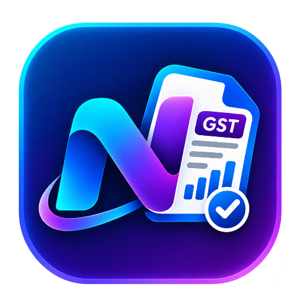

GST invoicing
Create tax invoices, quotations, credit notes, delivery challans and bills of supply. Save or print polished PDFs.

Nexuzy Ledgerby Nexuzy LabFree, open-source business software
Create GST invoices, manage customers and products, and prepare return data with an offline-first ledger built for Indian businesses.
No subscription. Your business records stay on your device.
TOOLS FOR THE EVERYDAY
Keep essential billing and bookkeeping tasks in one simple desktop app. Feature availability can vary by platform and version.
Create tax invoices, quotations, credit notes, delivery challans and bills of supply. Save or print polished PDFs.
Review GST return summaries and export supported GSTR-1 and GSTR-3B data for filing through the official tools.
Maintain customer and product records, track stock, and use barcode scanning on supported camera-enabled devices.
Record purchases and expenses, review reports, and import supported bank statement files for reconciliation.
Set up repeat invoice templates and manage generation from the app. Automated dispatch depends on your configured services.
Work locally without an account or a cloud subscription. Back up your records and choose where you keep the copy.
GST and e-invoicing: Nexuzy Ledger helps prepare records and exports; it is not a GST portal or Government of India service. IRN generation and direct portal submission require authorized IRP/GSP access and are not represented as available here.
GET STARTED
Download the latest release from GitHub, extract the ZIP, then use the platform-specific launcher included in the folder.
Use the green download button above or get the latest version from GitHub.
Keep the extracted folder in a location you can write to.
Open the Windows, macOS or Linux launcher in the folder and follow its prompts.
If you prefer the one-line installer, open PowerShell and paste:
[Net.ServicePointManager]::SecurityProtocol = [Net.SecurityProtocolType]::Tls12
irm https://raw.githubusercontent.com/david0154/Nexuzy-Ledger/main/install.ps1 | iexIf Windows blocks launching powershell.exe from the Run box, open PowerShell from the Start menu and run the two lines above there.
Publisher notice: Windows may display “Unknown Publisher.” The app is not currently signed with a trusted code-signing certificate; the Nexuzy Lab name on this page does not change that Windows warning.
Inspect the installer sourceTRANSPARENT BY DESIGN
Some requested capabilities depend on government APIs, authorized service providers or further development. Check the current release and documentation before relying on a feature.
See project updates Read the user guideTHE PEOPLE BEHIND THE LEDGER
Nexuzy Ledger is developed by Nexuzy Lab to make practical billing tools more accessible to small businesses. The project is open source and welcomes feedback, bug reports and contributions.
Developers David and Manoj Konar · Nexuzy Lab
info@nexuzy.in